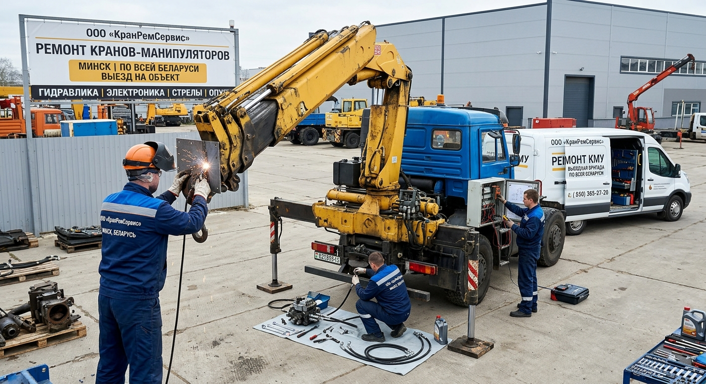
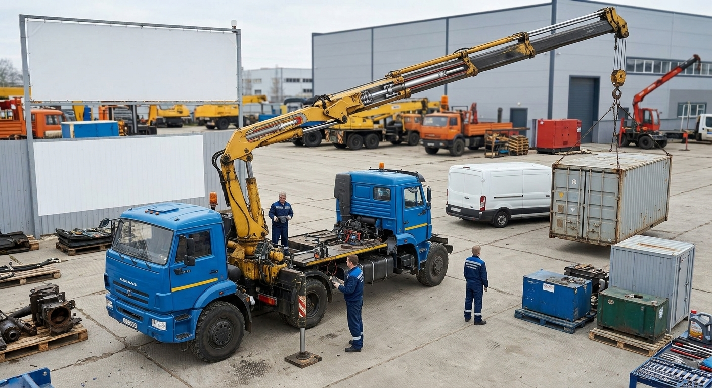
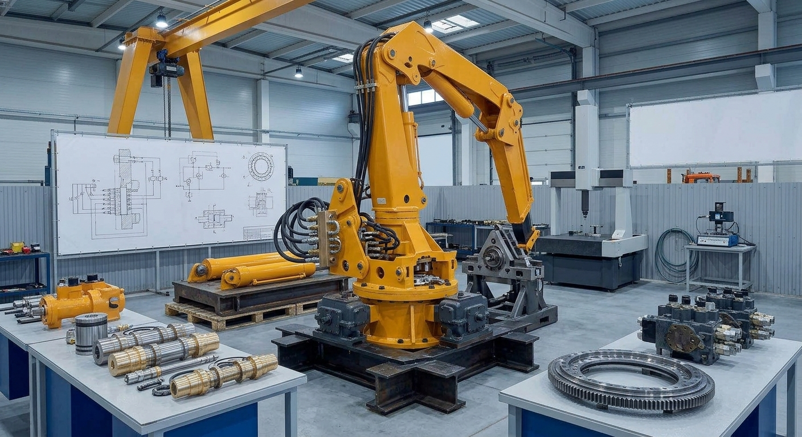
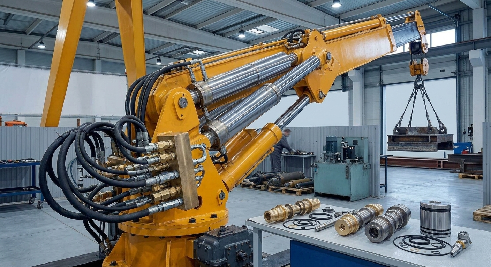
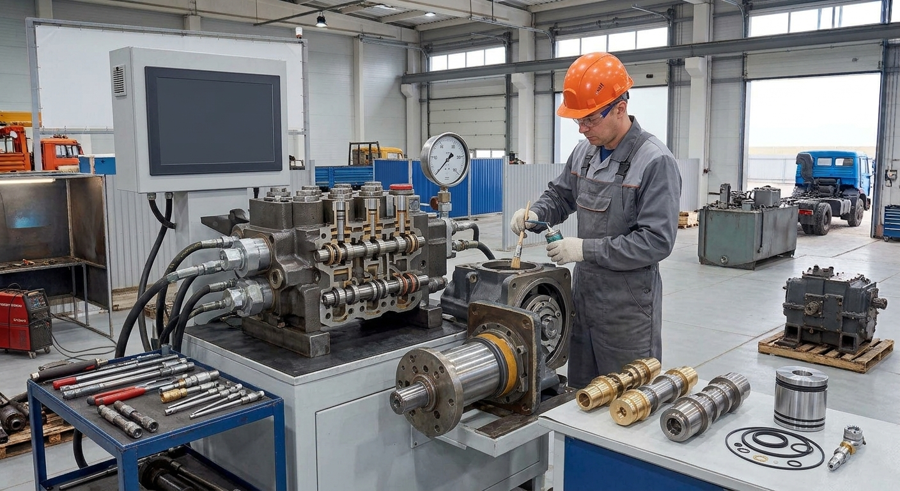
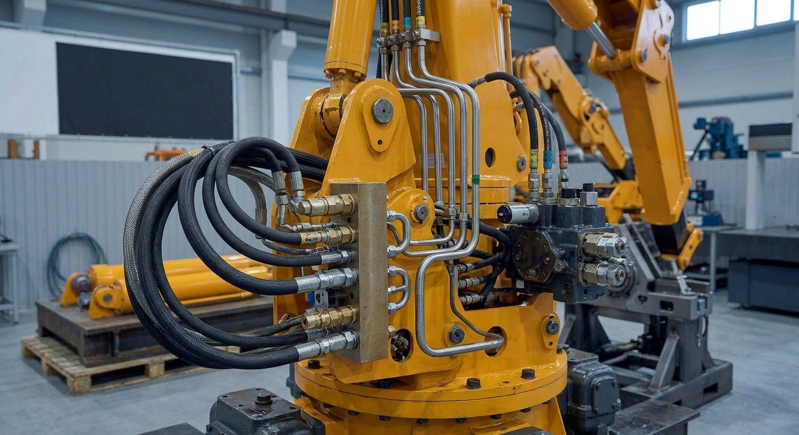
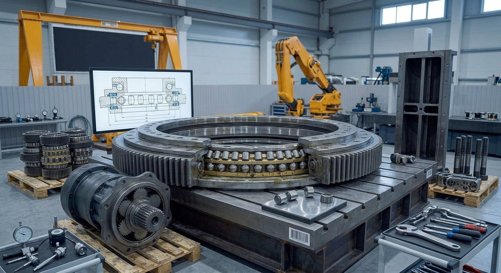
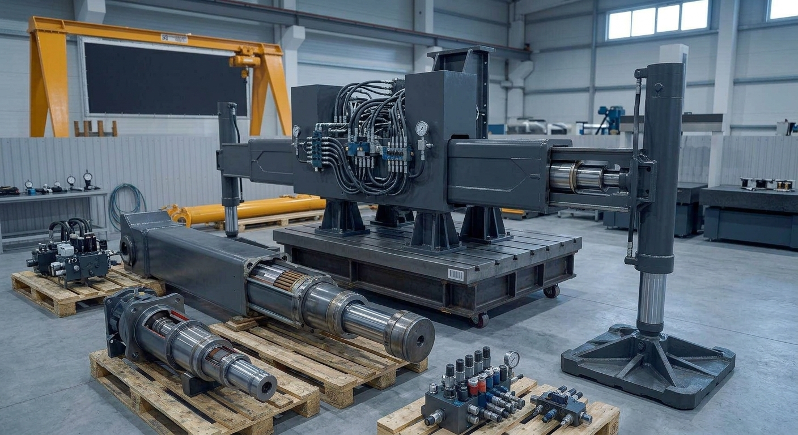

ООО «КранРемСервис» выполняет капитальный, текущий и аварийный ремонт КМУ на шасси автомобилей: гидравлических, электрических и комбинированных.
Устраняем течи масла, восстанавливаем гидроцилиндры, насосы и РВД. Ремонтируем металлоконструкции, электронику и ОПУ.

В зависимости от состояния оборудования и характера неисправности, ремонт КМУ делится на три вида. Мы выполняем все три — от профилактики до аварийного восстановления.
Плановый ремонт для поддержания КМУ в рабочем состоянии. Выполняется регулярно, чтобы не допустить крупных поломок.
Задача: не дать КМУ остановиться.
Глубокое восстановление КМУ с заменой или ремонтом основных узлов. Проводится, когда износ достиг критического уровня.
Задача: вернуть КМУ заводские характеристики.
Срочный выезд мобильной бригады для устранения критических поломок — прямо на объекте заказчика.
Задача: запустить КМУ в кратчайшие сроки.
Прозрачный процесс — от первого звонка до запуска КМУ. Вы всегда знаете, на каком этапе находится работа и сколько она стоит.
Выезжаем на объект или принимаем технику на базе. Проверяем гидросистему, металлоконструкции, электрику, ОПУ. По итогам осмотра составляем дефектную ведомость.
Срок: 1 рабочий день.
На основе дефектной ведомости рассчитываем стоимость работ, запасных частей и сроки. Согласовываем смету с вами — без скрытых доплат в процессе.
Срок: 1–2 рабочих дня.
Выполняем ремонт — на объекте или на нашей базе. Заменяем РВД и уплотнения, ремонтируем гидроцилиндры и распределители, восстанавливаем металлоконструкции, настраиваем электронику.
Срок: от 1 до 7 рабочих дней — в зависимости от объёма.
Проверяем работу КМУ под нагрузкой, тестируем гидросистему, тормоза, электронику. Оформляем документацию. Выдаём гарантию на выполненные работы.
Срок: 1 рабочий день.
КМУ — это гидравлический кран, установленный на шасси автомобиля. Его основа — гидросистема. Ниже — основные узлы, которые мы восстанавливаем.
Основная рабочая часть манипулятора. Состоит из нескольких секций, выдвигается гидроцилиндрами. При перегрузках возможно искривление геометрии, трещины. Мы восстанавливаем геометрию, усиливаем сварные швы, устраняем трещины.

Колонна — вертикальная стойка, на которой крепится стрела. Станина — основание, устанавливаемое на шасси. Это несущие элементы, которые испытывают максимальные нагрузки. Мы выполняем ремонт, усиление и сварку.

Главные исполнительные механизмы КМУ. Отвечают за подъём, выдвижение и поворот стрелы. При износе появляются течи, падает усилие. Мы выполняем ремонт цилиндров, замену уплотнений, восстановление штоков.

Насос создаёт давление в гидросистеме. Распределители направляют поток масла к цилиндрам. При износе появляются рывки, падение давления, перегрев масла. Мы ремонтируем и заменяем насосы и распределители.

Рукава высокого давления (РВД) — самое частое место течей. Мы выполняем замену и изготовление РВД по образцу, ремонт гидромагистралей, устранение утечек масла.

ОПУ обеспечивает поворот стрелы на 360°. Состоит из подшипникового узла и зубчатого венца. При износе появляются люфты, шум, затруднённый поворот. Мы выполняем ремонт и замену ОПУ.

Аутригеры обеспечивают устойчивость КМУ при работе. Состоят из гидроцилиндров и опорных пят. При износе возможны проседание, течи, деформация. Мы ремонтируем аутригеры, заменяем уплотнения и пятки.

Заполните форму — мы свяжемся с вами, уточним детали и рассчитаем стоимость работ. Ответим в течение 1 рабочего дня.